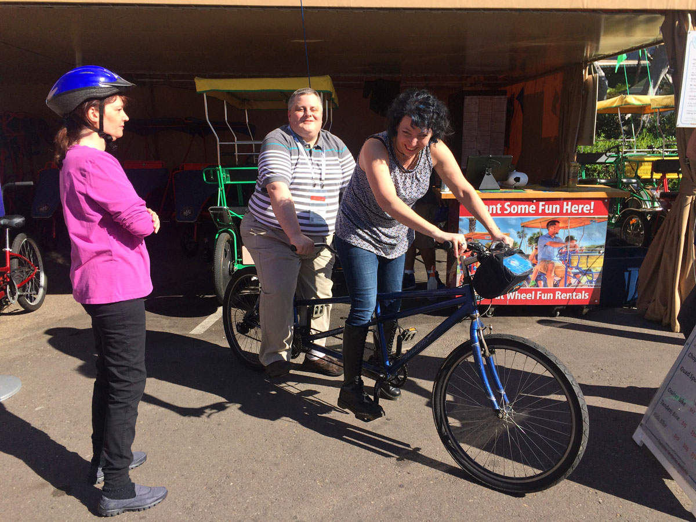
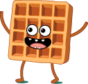

Accessible Angular.js
Accessibility is about people.
Accessible Angular.js
Marcy Sutton, Seattle, USA
Accessibility Engineer, Angular Core Team Member


& Me
Today
- Material Design & a11y 
- ngAria
- Protractor
- Angular 2
Legend: waffle denotes a major topic in client-rendered app accessibility
Material Design

Material Design for Angular 1.x

Interactivity
Semantics
Button
// should be:
ARIA
<md-checkbox tabindex="0" role="checkbox" aria-checked="true">
Checkbox
</md-checkbox>
Text Alternatives
Menu

Enforcing text alternatives
Focus management
Focus management
<md-sidenav class="md-sidenav-right" md-component-id="right">
<md-content ng-controller="RightCtrl">
<form>
<md-input-container>
<label for="testInput">Test input</label>
<input type="text" id="testInput"
ng-model="data" md-sidenav-focus>
</md-input-container>
</form>
<md-button ng-click="close()" class="md-primary">
Close
</md-button>
</md-content>
</md-sidenav>
Notifying the User

Notifying the User (code)
<aria-status role="status" aria-live="assertive">
<p ng-repeat="message in messages">{{message}}</p>
</aria-status>
switch (self.matches.length) {
case 0: return 'There are no matches available.';
case 1: return 'There is 1 match available.';
default: return 'There are ' + self.matches.length + ' matches available.';
}
Angular ❤ Open Source

ngAria
Accessibility Module in Angular 1.3+
Including ngAria
angular.module('app', ['ngAria'], function($ariaProvider) {
$ariaProvider.config({
ariaHidden: false
...
<body>
<!-- page content here -->
<script src="angular.min.js"></script>
<script src="angular-aria.js"></script>
</body>
ngAria
Adds support to these directives:
- ngModel
- ngDisabled
- ngShow
- ngHide
- ngClick
- ngDblClick
- ngMessages
ngAria & ngDisabled
<md-checkbox ng-disabled="true" aria-disabled="true"...
.directive('ngDisabled', ['$aria', function($aria) {
return $aria.$$watchExpr('ngDisabled', 'aria-disabled');
}])
ngClick
<div ng-click="ohNoYouDidnt()"></div>
ngAria & ngClick
.directive('ngClick',['$aria', function($aria) {
return {
compile: function(scope, elem, attr) {
var nodeBlackList = ['BUTTON','A','INPUT','TEXTAREA','SELECT'];
if (!isNodeOneOf(elem, nodeBlackList)) {
if (!elem.attr('role') && config.buttonRole) {
elem.attr('role', 'button');
}
if (config.bindKeypress) {
elem.on('keypress', function(event) {
if (event.keyCode === 32 || event.keyCode === 13) {
scope.$apply(callback);
...
That's a lot of effort...
Just use buttons!
- Node.js command line application
- Runs on WebDriver
- Choose your test framework
- Great for continuous integration
Protractor A11Y Plugin
Test your site with:

Protractor A11Y Plugin: Setup
exports.config = {
plugins: [{
tenonIO: {
options: {
// options.src will be added by the test
},
printAll: false,
},
chromeA11YDevTools: true,
path: 'node_modules/protractor/plugins/accessiblity'
}]
}
Protractor Accessibility
Can I use?
| Library | Pricing | API Key | External Request | No. of Tests |
|---|---|---|---|---|
| Chrome Accessibility Developer Tools | Free | No | No | 14 |
| Tenon.io | Free limited accounts, paid subscriptions | Yes | Yes | 63 |
Automated Testing Strategies
- Check for Labels
- Validate Roles
- Watched ARIA Properties
- Interactions
- Color Contrast
Angular 2
http://angular.io
Changes in Angular 2
- No more Directive Definition Object Link opens in a new window
- No more Controllers
- Works with Web Components
- Bind to properties, not attributes
- No more jqLite DOM wrapper
- ES6 modules
Event bindings
<button ng-focus="anticipationEvent()"
ng-click="deliverWaffles()" id="{{item.id}}">
Give me waffles </button>
<button (focus)="anticipationEvent()"
(click)="deliverWaffles()" [id]="item.id">
Give me waffles </button>
Angular 2 includes ARIA support
Angular 2 on Github
Contribute!

Resources
All links open in new windows